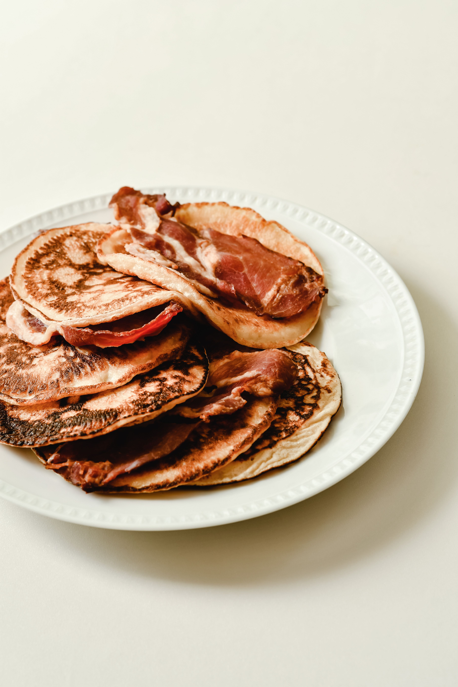

Back to Main Page
Bacon Pancake Dippers

Description
These delicious bacon pancake dippers are a perfect combination of crispy bacon and fluffy pancakes!
Ingredients
- 1 (12-ounce) package of bacon
- 1 (10-ounce) box low carb pancake mix or your preferred mix
- 1 cup water, or more as needed
- oil as needed for griddle
- maple syrup for dipping